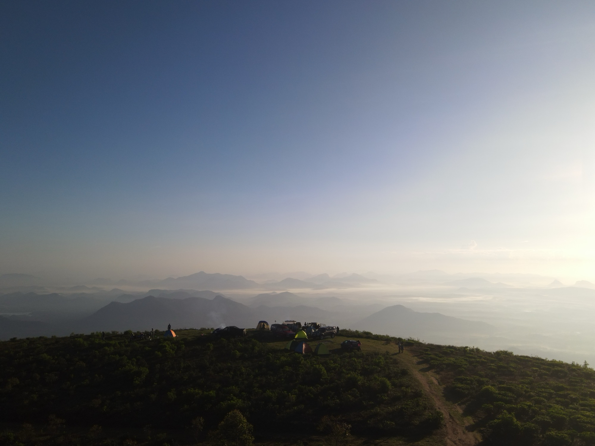
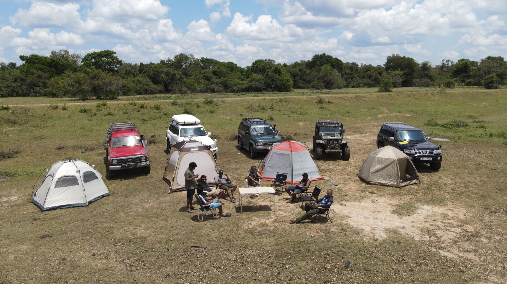
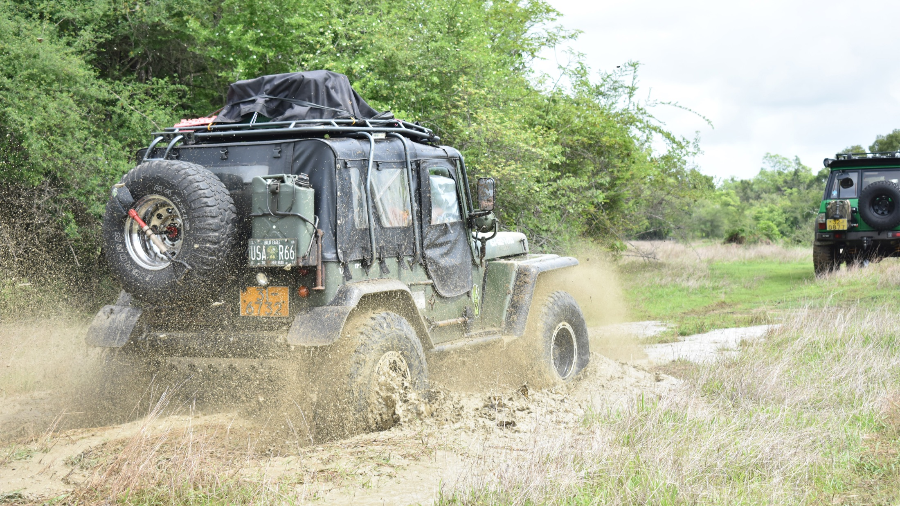

Hill country3 days
Devil's Staircase Overland Trail
Baker's Bend, Samanalawewa, Lipton's Seat, Haputale, Ohiya and the legendary Devil's Staircase descent.
Ceylon Backroads
finding hidden routes
Beauty without the usual queue
These are the roads we remember by smell, light, dust, water, wind, silence, and the faces that appear when the jeep slows down.



Routes with a pulse
Travel privately through carefully designed routes, from fixed expeditions to selected tailored journeys. Each experience is built around hidden landscapes, small communities, and authentic local stops beyond ordinary tourism.
Baker's Bend, Samanalawewa, Lipton's Seat, Haputale, Ohiya and the legendary Devil's Staircase descent.
Follow forest roads, tea valleys, highland farms, quiet reservoirs, waterfalls, and cool mountain towns across Sri Lanka's central hills.
Follow sandy lanes, lagoon edges, hidden beaches, and family-run seafood kitchens between villages.
Field notes
A scenic highland drive through Nanperial Estate, Baker's Bend, Nagrak, and the lower slopes of World's End.
A moonlit camping night beside a historic dry-zone tank near Tissamaharama.
An unexpected reservoir stop in Ampara, framed by forest, mountains, and migratory birds.
Ready when the road is